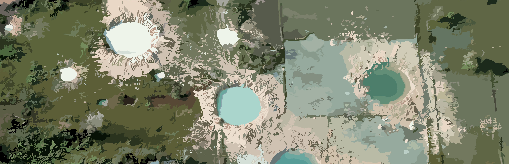

The United States was deeply affected years after the war. They had a lot of recurring problems, like their military was completely destroyed, and they faced incredibly hard challenges, like economic and even social, but managed to heal over time. By the 1980s and 90s, they had managed to reach more growth in their economy, and many efforts were made to fix the wounds of the war, which in the end paid out.


After the war, Vietnam had faced a hard point of reconstruction. They had to deal with economic struggles and environmental damage from chemicals. They also had to reintegrate veterans into their society. They began to help people who got hurt in the war, by setting up different programs. They even started to get along with some of the other countries which participated, like the United States, which was hard at first but they managed to reach peace.
China was not really involved in the later stages of the war, but they did support North Vietnam. After the war, China faced economic problems but quickly got to fixing all of them. In the late 1980s and 1990s, China had opened up to different types of investment, making them a powerhouse for trading. They started to change how they ran their businesses and economy as well. They even invited other countries to invest in them, which made them grow very fast.


When the war ended, the Soviet Union became a helper for Vietnam during the 1980s until the USSR collapsed in 1991. A few years before that, the Soviet Union was going through very rough economic challenges and faced shortage of economic goods. Nevertheless, they continued to be involved in politics, supporting communist movements even though they were facing tough challenges, and this ultimately led to their demise.
After the war ended, things got a little strange for France. Some people did not like the fact that they got involved, which surged disagreements between the people. The war made them think about how they dealt with other countries and changed their way of doing so for future conflicts. It made French people think about the history that they have had and how they interacted with different nations. Generally, it worked by reconsidering how France handled things inside and outside their country.